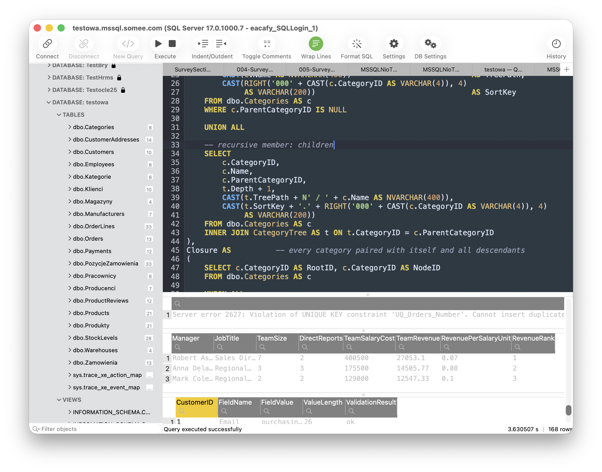

SQL Server client for macOS
Requires macOS 13 or later
A fast, native SQL Server manager for the Mac. Sign in with SQL login, Microsoft Entra ID, Kerberos or NTLM — with zero driver installation. Built with Swift.

Everything you need to work with SQL Server on a Mac
Truly native
A real Mac app built with Swift and AppKit. Fast, light on memory, at home in dark mode — no Electron, no Java.
Zero setup
The SQL Server wire protocol is built right in. Nothing to configure, no ODBC drivers, no Homebrew — download and connect.
Sign in your way
SQL authentication, Microsoft Entra ID, Windows authentication with Kerberos single sign-on, or NTLM. Works with Azure SQL and on-premises servers alike.
Many servers, many tabs
Connect to several servers at once. Every tab keeps its own session, so a query that runs for minutes never blocks the one you want to run right now.
Smart T-SQL editor
Autocompletion that reads your actual schema — instant even on databases with hundreds of thousands of columns. Syntax highlighting with themes, a SQL formatter and a searchable query history.
A complete objects explorer
Tables, views, stored procedures, functions, triggers, synonyms, sequences, types and assemblies — down to keys, constraints, indexes and routine parameters. Every database on the server, loaded as you expand it, filtered by name or even by column.
Script anything
Generate CREATE, ALTER, SELECT, INSERT, UPDATE, DELETE or DROP statements for any object — into the current editor, a new tab or the clipboard. Procedures and functions come with a parameters form, filled in and ready to execute.
Copy rows as SQL
Turn selected result rows into ready-to-run INSERT, UPDATE or DELETE statements in correct T-SQL — or copy them as CSV and TSV.
Edit and move data
Edit values right in the results grid, set NULLs and inspect large text and binary values in a viewer built for them. Export results to CSV, JSON, XML or SQL, and load CSV files straight into a table.
Exactly what the server returned
Dates, times and offsets are rendered the way SSMS renders them — no silent time-zone shifts, no lossy formatting. Binary, rowversion and geography columns stay untouched until you ask for hex or a preview.
Properties, in full
Table, view, index and column properties in one place — including a proper editor for extended properties, so you can document a schema in MS_Description without ever leaving the app.
Private by design
No telemetry, no accounts, no data collection. Passwords live in the macOS Keychain and your data never leaves your Mac.